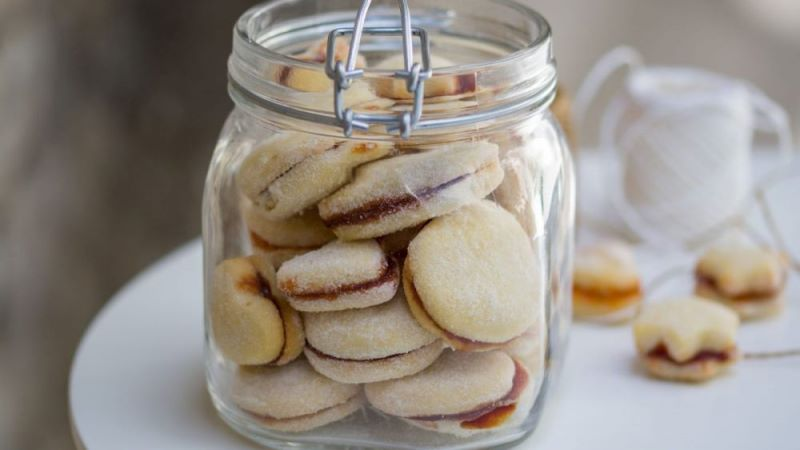
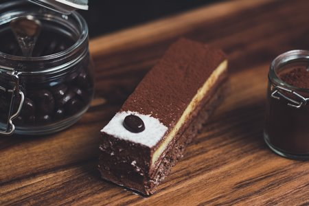
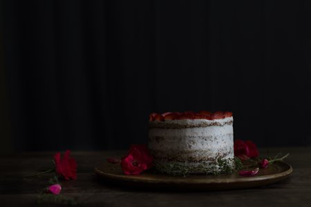

Saveti koji će Vam olakšati kuvanje
- U testo za palačinke koje se lepi za tiganj i nije rastresito možete da dodate čašu piva ili sneg od belanceta sa malo soka od limuna. Tako će palačinke biti rastresitije i neće se lepiti.
- Pite i gibanice pravite s uljem jer se ono ne steže kao mast. Na taj način ih možete poslužiti i kad su hladne.
- Želatin za kolače, pre spremanja, treba držati oko 15 minuta u hladnoj vodi. Pre stavljanja na vatru treba dobro iscediti i paziti da prilikom kuvanja ne provri.

- Tortu ćete lakše rezati ako nož često umačete u posudu s vrućom vodom.
- Narandže koje se teško gule potopite na kratko u vrelu vodu, pa ćete ih guliti mnogo lakše.
- Svež ananas ćete lakše oljuštiti ako ga prethodno narežete na kolutove, pa zatim svaki kolut oljuštite posebno.


- Prasak za pecivo zamenite sa sodom bikarbonom, a ako u tom trenutku nemate ni sodu bikarbonu pri ruci onda dodajte četiri kašike ruma ili konjaka.
- Kako biste prilikom ceđenja limuna ili pomorandže dobili što više soka, još neoguljeno voće valjajte minut i nakon toga iscedite.
- Najlakše ćete odvojiti belance od žumanca (kod jaja koja nisu potpuno sveža) ako ih razbijete u levak, belance će da iscuriiz levka, a žumance će se zadržati u njemu.